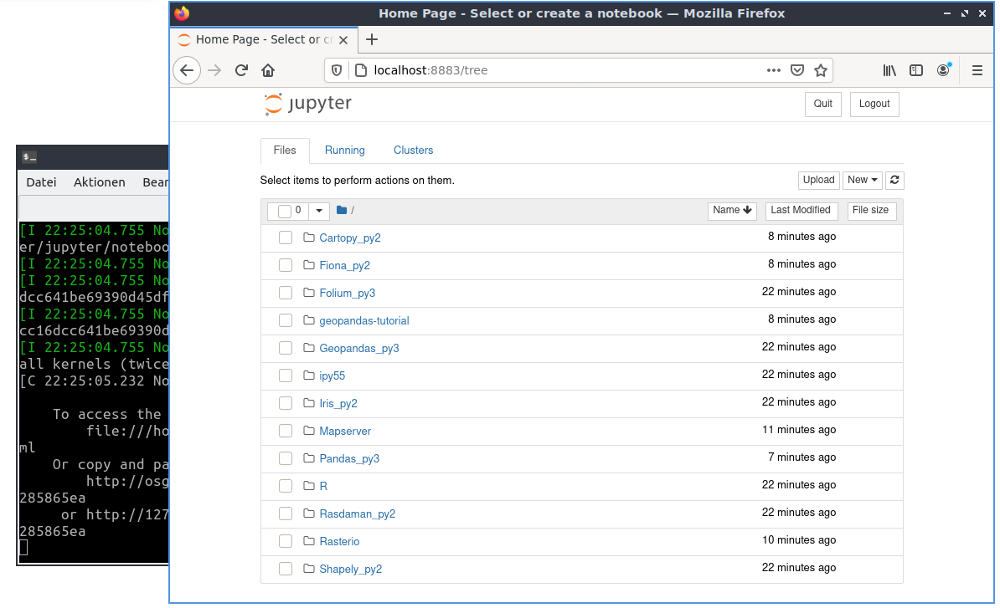

Jupyter jegyzettömb gyorstalpaló¶
A Jupyter jegyzettömb egy web alkalmazás, mely lehetővé teszi élő kódot, egyenleteket, vizualizációt és magyarázó szöveget tartalmazó dokumentumok létrehozását és megosztását. A felhasználás kiterjed a következőkre: adattisztítás és transzformáció, numerikus modellezés, gépi tanulás és még továbbiak.
Ez a gyorstalpaló a következőket írja le:
Egy Jupyter jegyzettömb szerver indítása
Jupyter jegyzettömb betöltése
Interakció a python kóddal
Tartalom
A Jupyter szerver indítása¶
Az alkalmazásindítás menüből a bal alsó sarokban.
Válassza a Geospatial -> Spatial Tools -> Jupyter Notebook-ot
Megnyílik egy terminálablak, és egy indítási napló látszik benne. Ezután elindul egy webböngésző, amely megjeleníti a Jupyter Notebook irányítópultját. A Jupyter Notebook irányítópultjáról navigálhat a könyvtárfában, új jegyzetfüzeteket indíthat, fájlokat és könyvtárakat hozhat létre, valamint átnevezhet, törölhet és feltölthet fájlokat.
{kind=link}
Létező jegyzettömb megnyitása és végrehajtása¶
Nyissunk meg egy meglévő jegyzetfüzetet. A főoldalon kattintson a geopandas-tutorial könyvtárra, és válassza ki a Bevezetés jegyzetfüzetet (01-introduction-geospatial-data.ipynb). Ez egy bevezető számos példával a térinformatikai vektoradatok Pythonban történő használatához geopands-al, Natural Earth2 adatait használva.

Az oktatóanyag magyarázó szövegekből és cellákból áll. A cellák ebben az esetben a futtatható Python kódot tartalmazzák.
A jegyzettömb feletti eszközsorból különböző opciók közül választhat:
Cell-> Run Cells: futtatja a kódot az aktuális cellában és a következő cellára lép.
Cell-> Run All: futtatja az összes cellát és megjeleníti az eredményeket, ha minden a terv szerint működik a lap alján látnia kell az eredményeket.
Vessen egy pillantást az eredményekre az összes cella futtatása után.

További Out[] fejezeteket láthat különböző eredményekkel, mint például táblázatok, térképek vagy számítások.
Az Out[3]-ban táblázatban láthatja az ország információkat.
Az Out[4]-ben egy rajz készült az összes országról.

Kód módosítása¶
Most változtassuk meg részben kódot.
A [10] cellában egy szűrőt definiáltunk az országokra. Csak Afrika kontinenst választottuk az országok közül:
In [10]: africa = countries[countries['continent'] == 'Africa']
Ezért a rajzon csak Africa van.
{kind=link}
Módosítsa a kiválasztást Asia`-ra és futtassa a két cellát ismét.
In [10]: africa = countries[countries['continent'] == 'Asia']
Eredményként Africa helyett Asia-t láthatja a rajzon.

Mi következik?¶
Fedezze fel az OSGeoLive-val szállított többi notebookot, és ismerje meg, hogyan dolgozhat Shapely, Rasterio, R, Iris és egyéb szoftverekkel.
A Jupyter jegyzettömbről további információkért tekintse meg a Jupyter ~Notebooks hivatalos dokumentációját <https://docs.jupyter.org>`__.
További jegyzetfüzet példák érhetők el a jegyzettömb gyökér könyvtárából.
Gyors bemutatkozás a Jupyter Notebook használatához Get started with Jupyter Notebook.